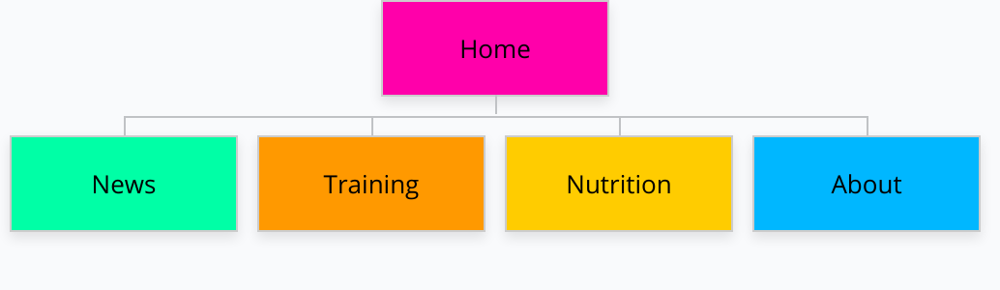
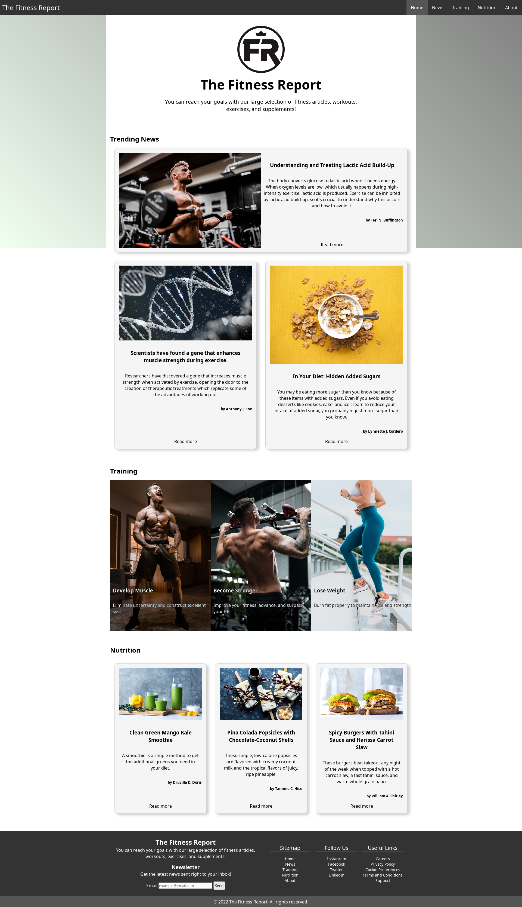
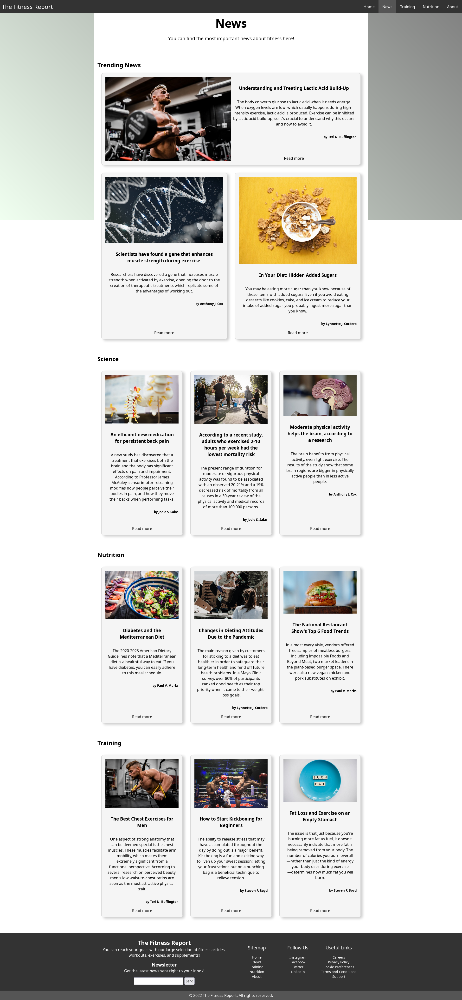
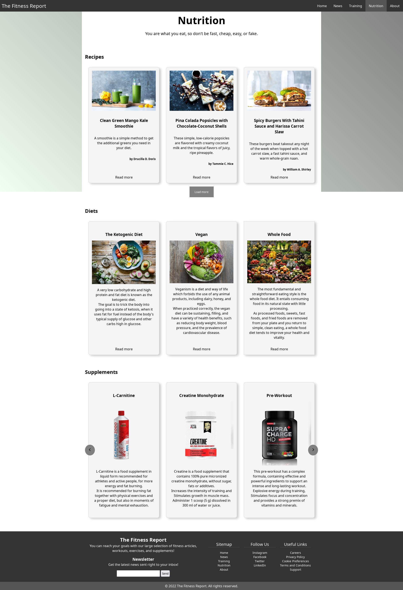
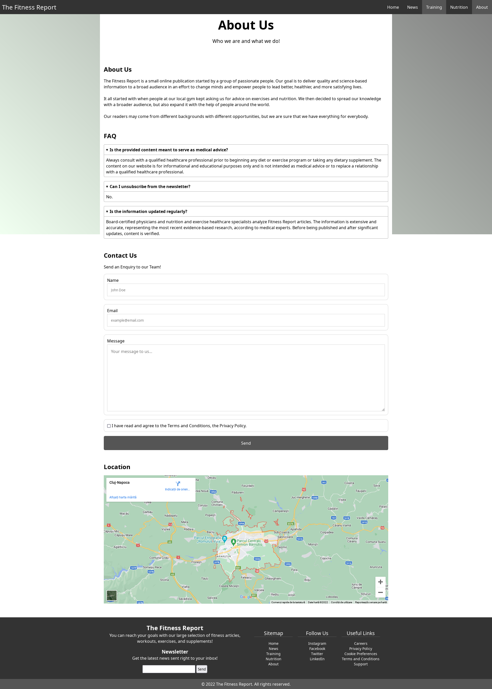
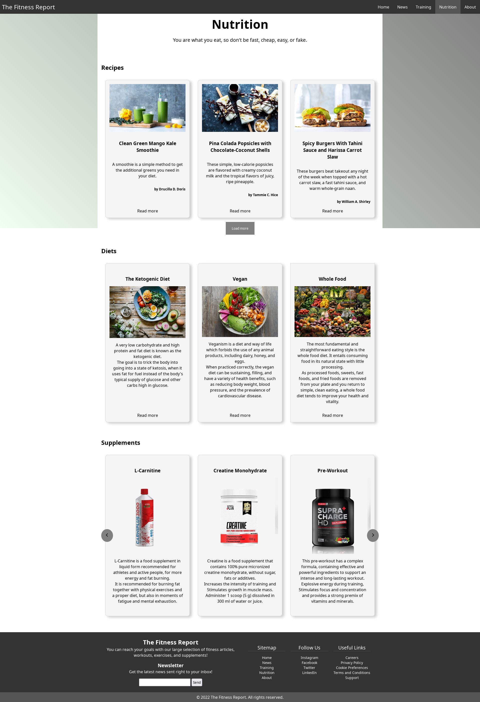
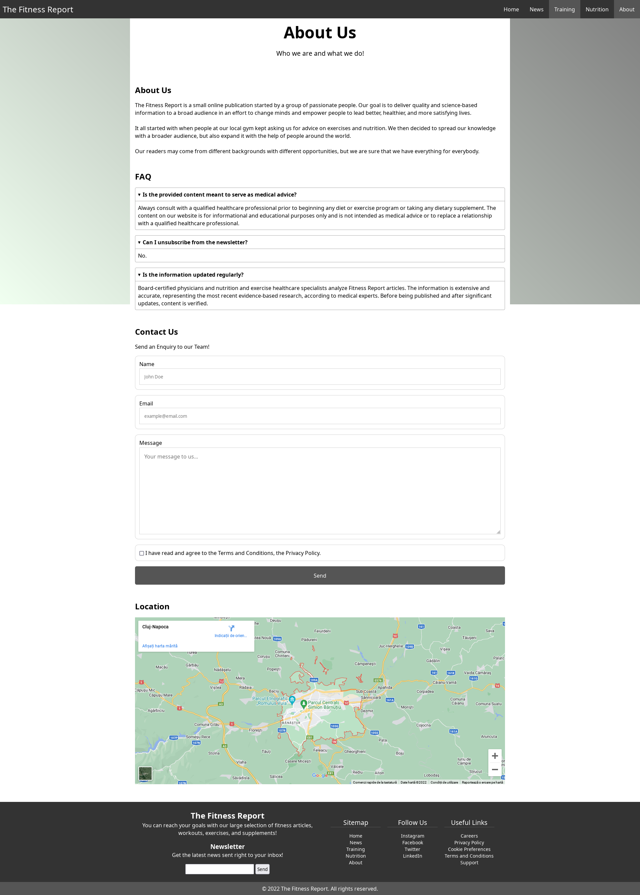

Cristian Niță
Introduction
Purpose
The website's objective is to offer a wide range of articles about fitness, going from basic exercises and
recipes, to science based information about our body and how to develop it properly.
The target audience is absolutely anyone, from novice to experienced lifters. Some articles, such as basic
training exercises or simple but nutritious recipes cater more to beginners as they need to know the
fundamentals first before learning anything advance. But there are also articles aimed at more advanced lifters
who need to take their lifting to the next level.
Structure
The "Home" page features a bit of information from every other page, like an introduction to other sections of
the
website. Just like an online magazine would do, the first section features trending news
that are most engaged by our readers, then a section about training which shows what are the goals of the
presented exercises like building muscle or losing weight. The last section presents the latest recipes for the
nutrition category.
The "News" page offers the same section of trending news and articles grouped by their category like science,
nutrition, and training. Every section contains the latest 3 articles for that category.
The "Training" page shows a bunch of exercises grouped by muscle groups. Each section shows the best exercises
that would stimulate these muscles the most.
The "Nutrition" page features a variety of recipes for smoothies, deserts and meals of various kinds. The next
section is all about diets, more specifically a collection of diets with a picture and a summary for each. The
last section presents supplements designed to enhance the training and give a performance boost.
information about diets and supplements.
The "About" page is the last page of the website with presents information about the company, a FAQ section, a
contact form to let people write a letter to our enquiry team and the location of our headquarters.
Inspiration
-
One factor that contributed to my choice in choosing this theme for my website is my personal experience
with weight lifting and working out.
-
Another contributing aspect for the creating of the website were the websites MyFitnessPal and
BodyBuilding.com which contain a lot of great resources including most of the content on my website.
-
Promoting health and a healthy lifestyle is another element that contributed to the making of this website.
I wanted to encourage and help people live a better life by providing the necessary information someone
might need to start working out and maintain a nutritious and fulfilling life.
Accessibility
To grant people with a range of abilities access and opportunity, the Web must be accessible.
The website follows accessibility principles presented in this article by the W3C organization
(https://www.w3.org/WAI/fundamentals/accessibility-principles/).
-
The Fitness Report website displays text alternatives for non-text content, for example every image has a
short equivalent text and every form control and input has labels. These alternatives have the function to
provide an equivalent user experience to people with disabilities and can be read aloud to them, enlarged to
desired text sizes and displayed on braille devices.
-
Another way in which the website is accessible to people with disabilities is that the content is easy to
see because the different color combinations employed by the website make it easy to distinguish between
foreground, background, and content and provides sufficient contrast. Images and text is resizable and
responsive which makes it easy to read and see on different screens and font sizes. Provide sufficient color
contrast.
-
A very important accessibility principle is that users can easily navigate the website, find content, and
determine where they are. Pages have clear titles and are organized using descriptive section headings and
there is more than one way to find relevant pages within a set of web pages. Also, the content that appears
is predictable, every page containing the same navigation and footer and at the same place each time with
same titles and content, which make users quickly learn the functionality and navigation on a website.
Usability
Usability is the ease with which users may interact with a website.
-
The website's readability is one factor in usability. The website's content is dispersed. Every element has
space around it to breathe, which helps the user by allowing him to concentrate on what is crucial and avoid
having his vision cluttered. The design makes it appealing because it is contemporary and at the same time
simple and contains all the information one would search for in a fitness magazine.
-
Performance is a another element of usability because visitors always leave slow websites. Many websites
load MBs
of useless advertisements, images, and other clutter that slows down websites and irritates users. My
website
has been created to be efficient while still providing all the content a user has come to expect from it.
-
The responsiveness of my website is the final usability factor. My site must function well across all
platforms because mobile traffic is more significant than ever. To provide a consistent experience across
desktop, tablet, and mobile platforms, the website is responsive.
Learning
-
Learning CSS flexbox and CSS grid and when to use them. CSS flexbox and grid are powerful tools to
layout elements on the page, but they have different use cases. Flexbox was made for one-dimensional layout,
while grid was made for two-dimensional layout. But the most important property of CSS grid is that you can
set the layout to be in a certain way which lets you create explicit responsive behavior, as opposed to CSS
flexbox which is more flexible and not as strict.
-
Learning CSS animations and CSS Pseudo elements. I used animations to add a fun CSS hover animation on the
navigation links using transform and pseudo-elements. A css pseudo-element is a keyword that is added to a
selector which lets you style a specific part of it. To create the animation I used the pseudo-element
"::after" and created a box that slides above the link when the cursors hover it.
In order to learn this, I watched a YouTube video: https://www.youtube.com/watch?v=ceNMP-aQkQ4 from the
channel "Kevin Powell", in which he showcases different CSS hover effects.
-
Learning JavaScript interaction with the dom. I learned to use the document object to select different
elements from the DOM and then attribute them events or classes and enabled me to create a responsive
navigation bar, a way to give the illusion of adding more articles by first hiding them and then show them
when a button is clicked.
In order to learn this, I used a YouTube video: https://www.youtube.com/watch?v=At4B7A4GOPg from the
YouTube channel "Web Dev Simplified", in which he shows this trick of toggling classes using javascript.
Evaluation
Evaluation I
I believe I've made progress when it comes to using HTML to mark up websites.
I can say with certainty that the previous group project has improved my understanding of the HTML syntax and
elements, as well as how to use them to build a moderately complex website.
I also improved in using CSS to create beautiful and stylish designs. I learned about animations and layout
using flexbox or grid and how to use them effectively.
Designing wireframes and mock-ups is another area I improved a lot, having more ideas and being able to
implement them very fast in Figma.
Evaluation II
One area that I am not really happy with and I wish I would've improved more is CSS. Although I made some
progress, I would've liked to create a more colorful and responsive website that has more interesting elements.
The world of CSS animation is fairly complex and I managed to just get a feeling of how to create the most basic
of them, but I fell like this would have added to the experience that a real user would feel when visiting my
website.
One other thing I would do differently another time is using a templating framework.
Copying and pasting code around and checking to see if everything is the same is very frustrating and tiring.
Using a templating engine like Handlebars would've helped me simplify and speed things up.
Resources
-
MDN Web Docs - The MDN Web Docs site provides information about Open Web technologies including HTML, CSS,
and APIs for both Websites and progressive web apps.
-
W3Schools Online Web Tutorials - W3Schools is an educational website for learning web technologies online.
-
Figma - Figma is a browser-based collaborative interface design tool
-
Visual Studio Code - Visual Studio Code is a code editor redefined and optimized for building and debugging
modern web and cloud applications
-
W3C Markup Validation Service - This validator checks the markup validity of Web documents in HTML, XHTML,
SMIL, MathML, etc.
-
Quillbot - QuillBot's paraphrasing tool helps millions of people rewrite and enhance any sentence,
paragraph, or article using state-of-the-art AI.
-
Bodybuilding.com - The largest selection of fitness articles, exercises, workouts, supplements, & community
to help you reach your goals!
-
MyFitnessPal Blog - MyFitnessPal is the leading app for tracking your nutrition and fitness goals
-
(Web Dev Simplified / Kevin Powell) YouTube Channels - https://www.youtube.com/c/WebDevSimplified and
https://www.youtube.com/c/WebDevSimplified
References
Links to all images and articles used in my website.
The content of the articles used has been slightly modified using this tool: https://quillbot.com/
- Logo of the website: https://fitnessreport.ca/
- https://health.usnews.com/health-news/blogs/eat-run/articles/added-sugars-hiding-in-your-diet
- https://health.usnews.com/health-news/blogs/eat-run/articles/mediterranean-diet-for-people-with-diabetes
- https://health.usnews.com/health-news/blogs/eat-run/articles/how-the-pandemic-shifted-dieting-attitudes
- https://health.usnews.com/health-news/blogs/eat-run/articles/top-healthy-food-trends
- https://blog.myfitnesspal.com/pina-colada-pops-with-chocolate-coconut-shells/
- https://blog.myfitnesspal.com/clean-green-mango-kale-smoothie/
- https://blog.myfitnesspal.com/spicy-burgers-with-tahini-sauce-and-harissa-carrot-slaw/
- https://blog.myfitnesspal.com/oven-baked-egg-spinach-bacon/
- https://blog.myfitnesspal.com/bacon-potato-breakfast-tacos/
- https://blog.myfitnesspal.com/gnocchi-cauliflower-skillet-casserole/
- https://blog.myfitnesspal.com/chocolatey-brownie-yogurt-parfaits/
- https://www.sciencedaily.com/releases/2022/08/220802121722.htm
- https://www.sciencedaily.com/releases/2022/07/220725105618.htm
- https://www.sciencedaily.com/releases/2022/08/220803112611.htm
- https://www.sciencedaily.com/releases/2022/07/220725124104.htm
- https://unsplash.com/photos/pAlhyoKWlPo
- https://unsplash.com/photos/qkQwDvRqQY8
- https://unsplash.com/photos/Y1drF0Y3Oe0
- https://unsplash.com/photos/_TLKIVSW6Do
- https://unsplash.com/photos/-gOUx23DNks
- https://unsplash.com/photos/1eL99eGXp0g
- https://unsplash.com/photos/3KGF9R_0oHs
- https://unsplash.com/photos/7kEpUPB8vNk
- https://unsplash.com/photos/A4Ax1ApccfA
- https://unsplash.com/photos/BHD2OxkYGSk
- https://unsplash.com/photos/fG0p4Qh_aWI
- https://unsplash.com/photos/h8sl-oNcat0
- https://unsplash.com/photos/IGfIGP5ONV0
- https://unsplash.com/photos/Iy7QyzOs1bo
- https://unsplash.com/photos/J154nEkpzlQ
- https://unsplash.com/photos/jUPOXXRNdcA
- https://unsplash.com/photos/wKnLfKFZgqk
- https://chopra.com/articles/10-popular-diets-explained
- https://www.naturalplus.ro/
- https://www.muscleandstrength.com/articles/maximize-gym-time-most-productive-muscle-building-exercises.html
- https://barbend.com/best-biceps-exercises/
- https://www.bodybuilding.com/content/10-best-chest-exercises-for-building-muscle.html
- https://www.bodybuilding.com/content/10-best-muscle-building-back-exercises.html
- https://www.bodybuilding.com/content/10-best-muscle-building-leg-exercises.html
- https://www.bodybuilding.com/content/10-best-muscle-building-shoulder-exercises.html
- https://www.bodybuilding.com/content/the-10-best-muscle-building-triceps-exercises.html
- https://www.bodybuilding.com/content/10-best-muscle-building-biceps-exercises.html
- https://www.healthline.com/health/fitness-exercise/best-chest-exercises
- https://www.healthline.com/health/fitness-exercise/rear-delt-exercises
- https://www.verywellfit.com/lactic-acid-build-up-what-it-means-5197207
- https://www.verywellfit.com/kickboxing-for-beginners-5216164
- https://www.verywellfit.com/should-you-exercise-on-an-empty-stomach-1231583
Appendices
Sitemap

Wireframes
Desktop


Mobile


Mockups
Desktop


 



Mobile